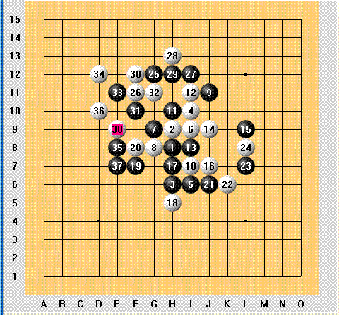

请问黑后面如何走出必胜？谢谢
#1 请问黑后面如何走出必胜？谢谢 作者：雁儿 发表时间：2006-4-25 22:24:50
这个是去年全国赛的一局实战对局，后来执黑者吴镝说该棋37以后黑就必胜了，可我愚钝，不能找到正确的必胜方式，请表面拆解一下，谢谢！！！#2 Re:请问黑后面如何走出必胜？谢谢 作者：雁儿 发表时间：2006-4-27 21:27:55
图片在此#3 答案：请问黑后面如何走出必胜？【梦之岛黄飞鸿】 作者：有志青年 发表时间：2006-4-28 12:53:37
文字叙述答案见七楼。
#4 Re:请问黑后面如何走出必胜？谢谢 作者：zz06zz 发表时间：2006-5-15 20:31:55
看不出,白有先手之利的#5 Re:请问黑后面如何走出必胜？谢谢 作者：梦之岛黄飞鸿 发表时间：2006-6-11 8:50:22
做是做出来了。可是不知道怎么发出来。
#6 Re:请问黑后面如何走出必胜？谢谢 作者：梦之岛黄飞鸿 发表时间：2006-6-11 10:05:30
我说坐标吧。看到图上最后白38手活三，看起来白似乎先手，但是黑的有D9先冲四，就可以把先手抢过来，白40手G9反四，黑41手C5挡，白的基本上就没有先手了。如果你会说，不对，我白的还有呢，我可以把34，36连起来活三呀，但是，黑的挡一下就没有先手了，所以这个时候，白的就要防黑的了。但是防哪里呢，有三个选择，C9，C10，F10。如果白42手C9，黑F10冲四，45手H12白G11挡，同时冲四，黑G12。白48手F11必然（如果48手I11，黑就可以F11，F12简单胜出）黑I11反三，白G13。黑C10活三，白B11挡，黑53手E12做杀。下面就是简单的D11，E10，D10。如果白42手选择挡在F10，那么黑的胜就比较的简单了，黑C10活三，白B11挡，黑B9冲四，白C9，黑E12活三做杀，下面就是两步的VCF，F11，E10。如果白42手选择C10，那么黑的C10冲四，白F10，黑C8一子双杀，C6和F11两个点。我就简单说这个三个点，如果哪里有不对的地方请大家多多指出，我也好学习学习。在此，愿我们的家园越来越好。谢谢大家。［ 有志青年 于 2006-6-11 13:27:58 时奖励此帖[金币加 20 ］
#7 Re:请问黑后面如何走出必胜？谢谢 作者：455 发表时间：2006-6-19 20:23:31
这样
［ 有志青年 于 2006-6-19 21:11:09 时奖励此帖[金币加 20 ］